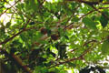
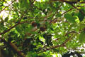

Common name in Tamil : Somuntheri, kadal manga
Common name in Telugu : Chenuga
Common name in Singhalese : Kontalai, mutti kad
 

Diagnostic characters
Botany & morphology
Reproductive biology
Ecology
Distribution
Uses
Trees, up to 8 m tall, branchlets sparsely lepidote. Leaves pinnate, with rounded tips. Flowers fragrant, white; fruit capsule, woody, seeds pyramidal.
Leaves compound, alternate, paripinnate, leaflets 1 - 3 pairs, petiole 6 cm long, opposite, obovate, apex obtuse or round, base cuneate or subacute, 6 - 10 x 3.5 cm, entire, puberulous, glossy above.
Inflorescence axillary thyrses.
Flowers small, white with a reddish gland within, regular, bisexual; calyx 4 lobed, short; petals 4, free, spreading, contorted; stamens 8; ovary 4-celled, style short, stigma thick.
Fruit septafragal capsules, up to 30-40cm in diameter; seeds 10 – 15, pyramidal.
Trunk surface smooth, pale, blotched greenish or yellowish, bark peeling in patches, base often enlarged, with well - developed buttresses continued outward as narrow undulating ribbon like extensions of the surface root system.
Pollination by bees and insects.
Mainly in mangroves, usually estuarine and often associated with Nypa sp. and / or Sonneratia sp.
East Africa to Southeast Asia, Tonga, N. Australia and Malayan archipelago. In India it occurs in east and west coastal area up to Maharashtra and in Andaman Islands. In Sri Lanka it occurs in southwestern part.
Wood used for boat building, furniture and as fuel, bark used for tanning, root used as a remedy against cholera and dysentery, seed oil is used for illumination and grooming hairs, seed-paste is used to cure breast tumor.
Top of the page